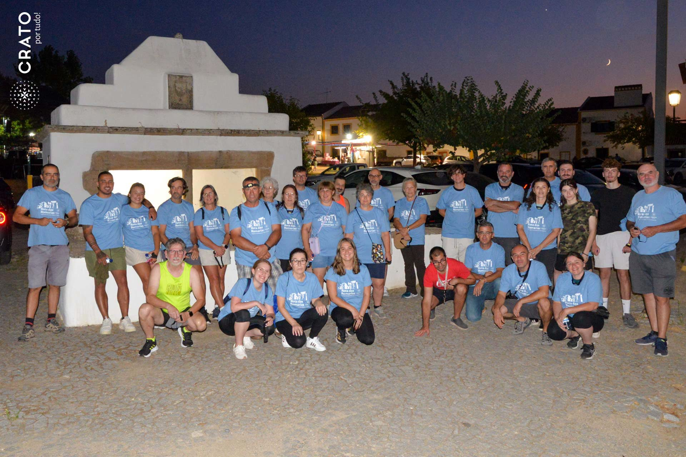
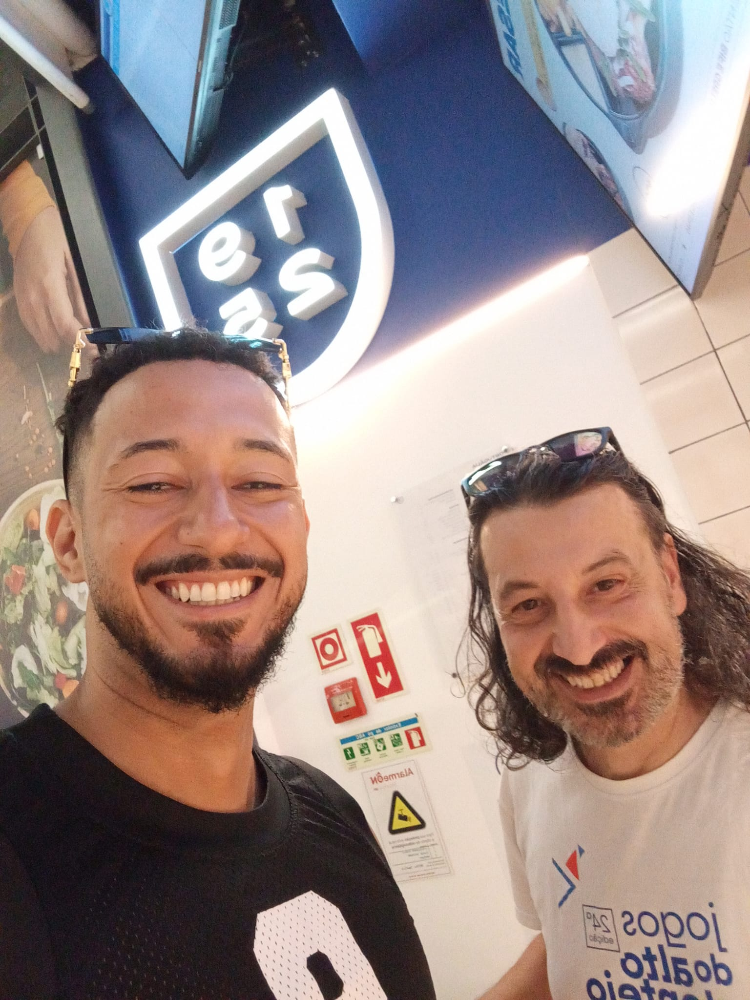

O gajo começou as férias a fazer uma caminhada pelas redondezas aproveitand o fato de haver uma organizada pela comunidade local dedicada à temática das Fontes Mediavais.

A caminhada noturna percorreu antigos caminhos, inclusive alguns usados por antigos peregrinos de Santiago. Durante a caminhada houve tempo para relembrar a história do Convento de Santa Maria de Flor da Rosa, em particular do antigo fosso e outras obras hidráulicas entretanto desaparecidas.
O gajo foi a Castelo Branco à boleia de ir fazer umas compras e passou pela Portugália e qual não foi o seu espanto quando encontrou o João Guilherme.
